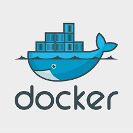
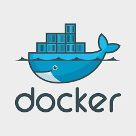
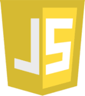
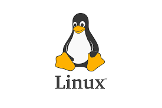
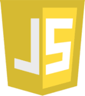
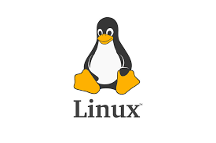
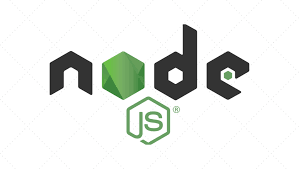
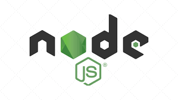
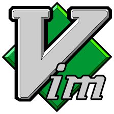
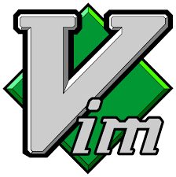

 



 

 


jared@gurrfamily.com
+1 480 283 5152
27, San Tan Valley, Arizona, United States
Click any button above to see it's description and external links on left side.
Bourne-Again Shell is a shell with powerful scripting capabilities and regex searches. I use it for administration, automating scripts for MySQL/Couchbase queries, deploying Docker containers, and Github push/pull updates.
Couchbase is a NoSQL database which uses json Documents to store data. It uses it's own language called N1QL (pronounced Nickel). I use it as an alternative to MySQL/MariaDB for projects that may benefit from it's powerful features and simplicity.
Docker is a "Containerization" software which allows you to develop and deploy apps inside totally controlled environments. All my apps run inside Docker containers so that no matter what server my apps are running on, it will work the same no matter what base OS or hardware that server uses.
Git is a minimalistic and lightweight but powerful version control software which makes it easy to develop projects/apps and explore ideas in separate "branches", and if some new feature breaks the program I can always rewind back to a previous state when it worked. It's also great for team-driven development.
HTML and CSS are the two main languages I learned to build the front-end of my web applications, I am not an expert with them like I am with the other Backend technologies, but I know enough so that I could make my projects look good enough to post on the web.
IntelliJ IDEA is my preferred Java IDE. I used to use Eclipse, but found that IntelliJ was more intuitive and required much less configuration than Eclipse did. Thanks to IntelliJ Ultimate my productivity has definitely increased substantially, but don't expect me to have any numbers to substantiate that claim. Suffice it to say, it at least feels like I am getting more done with it than I was with other IDE's.
I use Java as the main backend language of all my web applications. This is because Java as an Application language has much more power and features than something like JavaScript/Node.js. This is the reason I devoted more time to learning and mastering Java than I did to JavaScript. Combined with Vert.x for asynchronicity, Java is a ideal programming language for handling all my web applications backend code.
JavaScript is the first programming language I learned, and it's what I use to manipulate the HTML DOM for apps that require it, and to communicate to Java Backend programs.
After I built my own PC, I decided to install both Windows and Linux on it in a dual boot configuration. Within a short time, I found out I liked developing within Linux much more than I did within Windows, so now I mostly use Linux for 100% of my programming. Right now my workstation OS is Pop!_OS, which is based on Ubuntu. Beyond that, I also run my servers in RancherOS and use Alpine within that.
MySQL/MariaDB are databases I learned as my primary method of storing data from my websites. This is my second most studied programming language behind Java as it is the one I use the most.
Node.Js is the program I learned to use simply because before I knew Java/Vertx it was an effective and easy way to connect MySQL to my websites. NPM and Node.Js are technologies I am very familiar with, and can use effectively.
RXJava2 was the reactive Extensions package I learned for use with Vertx, and since Couchbase uses only Reactor Core I also learned that. I learned them so that I could make my Java code reactive. So I am very familiar with Reactive code and it's syntax.
Vert.x is the technology that makes all my Java Code Asynchronous and it makes communication between backend and frontend code, as well as communication between Java classes very simple/intuitive with it's eventBus messaging system. Beyond that, when it is combined with couchbase database it is a great recipe for handling communication between servers and clients even if there are millions of people logging in at the same time. Vert.x also has tons of helpful documentation. In my opinion Routing webpages also seems easier in Vert.x. All of these reasons leads me to using Vert.x for all my Java webapps.
VIM(Vi-Improved) is one of my all time favorite technologies I learned in the past few years. It is simply an editor, but it is so powerful and has so many capabilities, that any code or even simple text documents you write will be done in much less time than it takes in normal text editors. Check out the webpage and you'll see more details explaining vim. All my programs are written in VIM.
This was my very first project I ever did. Built with Node.js and Mariadb connector.
Goal was to develop skill with Database Integration to web apps.
This was my second project, client had an old webpage they wanted me to replace with a more modern one. but still keep the appealing parts of it.
Here I got to practice my skill with JS-DOM manipulation for the pictures.
This is currently my most ambitious project. It is still a work in progress and it's a group effort of me and two other developers.
It's basically a video game you play in your browser based on the online game "Dungeon Crawl Stone Soup".
The reason I liked working on this project so much is it deepened my understanding of Java programming on the backend with JavaScript on the front end, and use of Model-View-Controller concepts as well as reactive programming with Vertx, Web Routing and finally I learned standard practices that businesses such as American Express use for Couchbase and N1QL on this project.